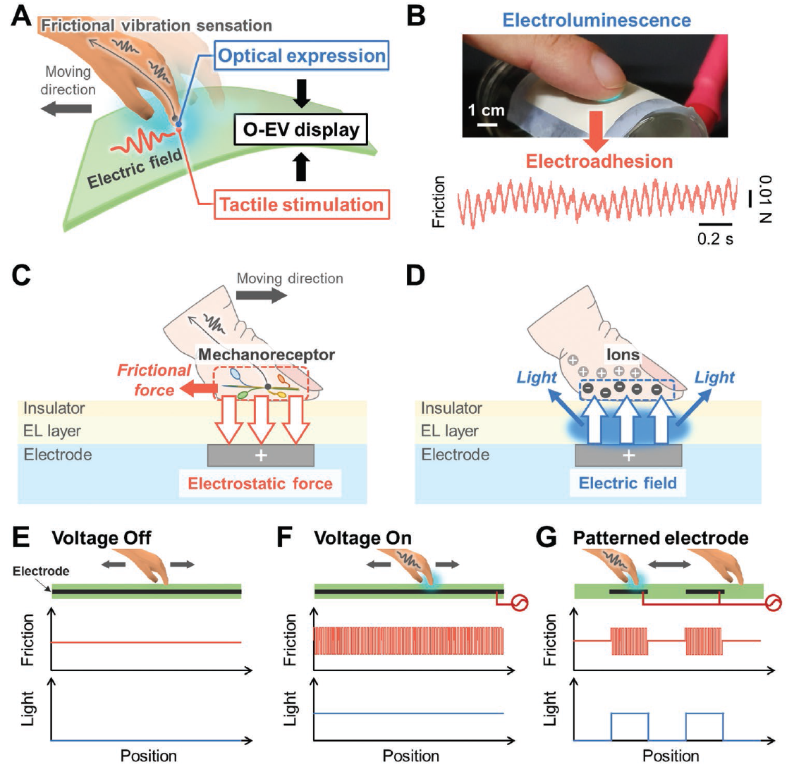
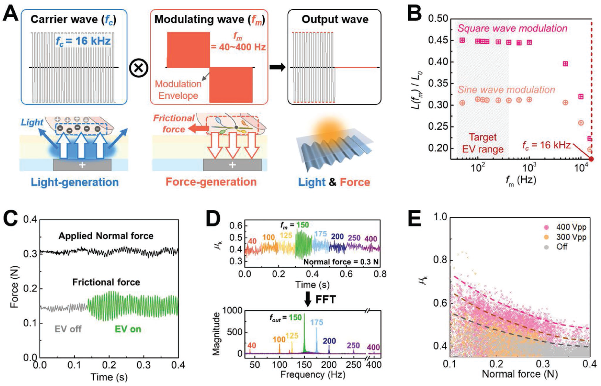
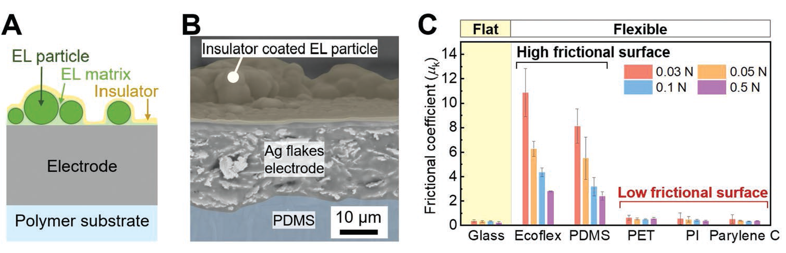
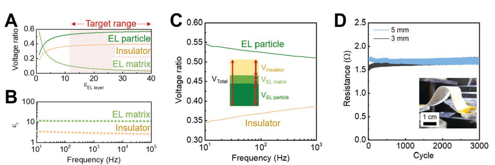
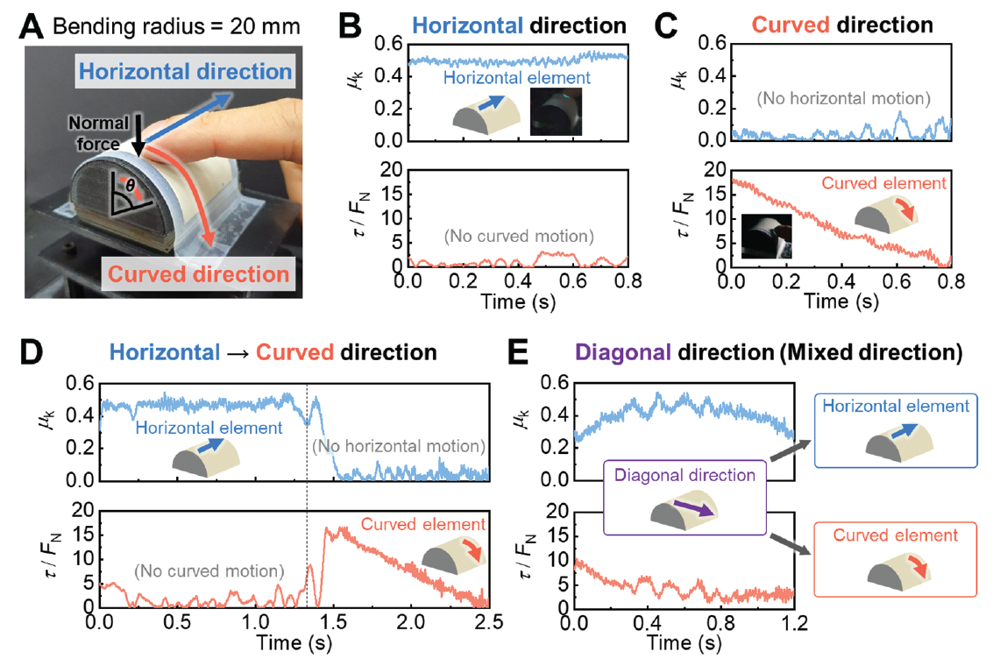
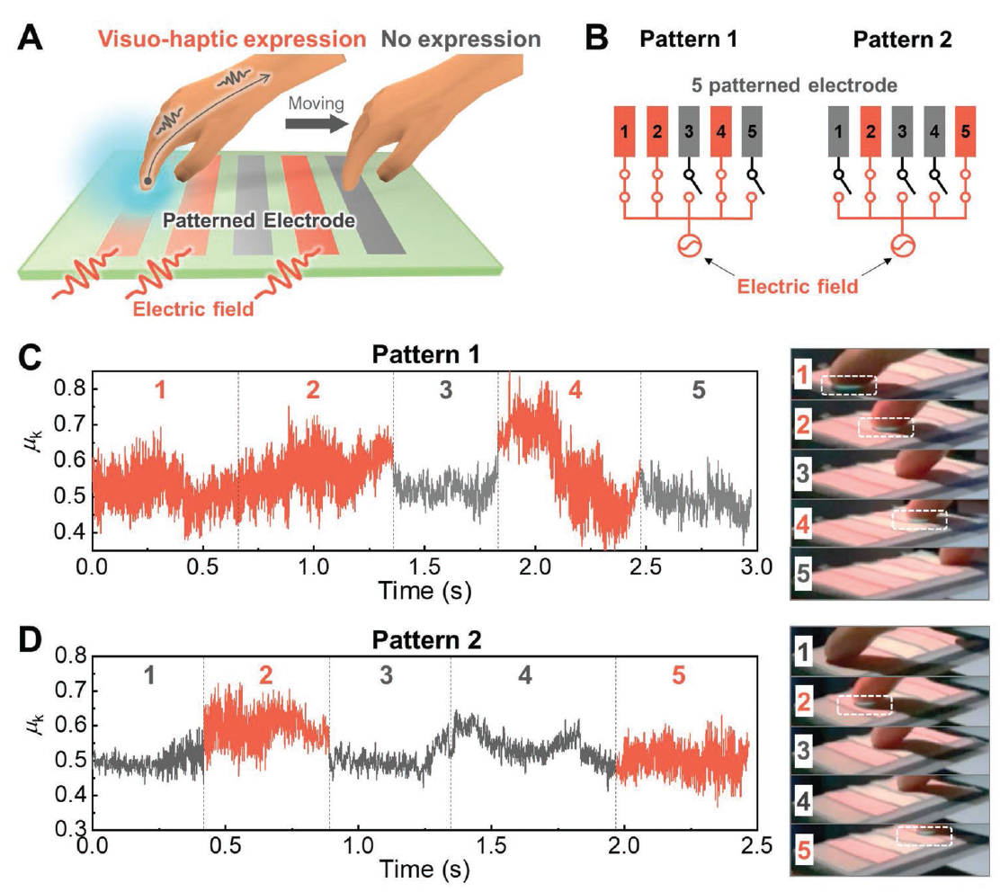

Visuo-Haptic Device
based on Electroluminescence (EL) and Electrovibration (EV)
Intrinsically Synchronized Flexible Visuo-Haptic Device Operated by Single External Electric Field
Advanced Optical Materials, Vol. 11, No. 7, 2202515. 2023
ABSTRACT
Providing multisensory expression in a synchronized form helps human perception in human-machine interfaces. Synchronized visuo-haptic integration has been relatively less explored because the two expressions operate by different principles. This study demonstrates a flexible visuo-haptic device that generates haptic sensation by electrovibration (EV) in conjunction with the synchronized optical expression by alternating-current electroluminescence (ACEL). This study suggests material design and electric field modulation that are effective for both EV and electroluminescence (EL). Owing to the structural simplicity of the opto-electrovibration (O-EV) device, the EV and EL are intrinsically coupled under single electric field input. A curved O-EV device simultaneously provides localized frictional tactile expression and localized luminescence on the touch screen. This study opens a simple material approach for multisensory expression that can be useful in soft haptic devices.
FULL CITATION
Gilwoon Lee, Chaeyong Park, Doowon Park, Seungmoon Choi, and Unyong Jeong. Intrinsically Synchronized Flexible Visuo-Haptic Device Operated by Single External Electric Field. Advanced Optical Materials, Vol. 11, No. 7, 2202515. 2023
FIGURES

Conceptual scheme and principles of the opto-electrovibration (O-EV) display. A) The O-EV display with optical expression and tactile stimulation to a moving finger. The finger senses the frictional vibration under external electric field. B) Digital image of electroluminescence (EL) as an optical expression (top) and the electrovibration (EV) as a tactile stimulation (bottom). C) Scheme of the EV generation in the O-EV display. The frictional force is generated by electrostatic force acting as an additional normal force. D) Scheme of the EL generation in the O-EV display. The light is generated under the alternating electric field applied to the EL layer. E–G) The synchronized optical and tactile expressions: E) without external potential (voltage off), F) with potential applied to the electrode (voltage on), and G) with potential applied to a patterned electrode.

Modulation of the electric field for the opto-electrovibration (O-EV) display. A) Modulation of the carrier square wave (fc = 16 kHz) by a low frequency (fm = 40–400 Hz) wave. The carrier wave is for the electroluminescence (EL) and the modulating wave is for the electrovibration (EV). B) Relative luminance after modulation as a function of the modulation frequency (fm). C) Variation of the applied normal force and its frictional force at 150 Hz modulation wave. D) Frictional coefficient (μk) of the O-EV display at various fm (top) and the frequency responses of obtained frictional force (bottom). E) Frictional coefficient (μk) at different peak-to-peak voltages (300, 400 VPP) as a function of the applied normal force.

Structural designing for the opto-electrovibration (O-EV) display. A) Device structure of the O-EV display. B) A cross-sectional scanning electron microscope (SEM) image. C) Kinetic frictional coefficient (μk) of various materials (glass, elastomers (PDMS, Ecoflex), plastics (PET, PI, parylene C)). The color of the frictional coefficients matches with the numbers, which is the applied normal forces.

Designing electrical properties for the opto-electrovibration (O-EV) display. A) Calculation of the relative voltage on each layers as a function of the dielectric constant of the electroluminescence (EL) layer (εEL layer). The target dielectric constant range is shaded in red, which leads to (VEL matrix/Vtotal) < 0.1. B) Dielectric constant of the EL matrix and the insulator. C) Calculation of the relative voltage on the EL particle and the insulator as a function of frequency. D) Resistance changes of the electrode integrated in the O-EV display during 3000 bending cycles at a bending radius of 3 and 5 mm.

Flexible opto-electrovibration (O-EV) device distinguishing finger movements in the horizontal and curved directions. A) Digital photo of the curved O-EV device placed on a cylinder. A finger moved in the horizontal direction and the curved direction (θ). B,C) Frictional coefficient (μk) and torque (τ) divided by a normal force (FN) when the finger moved in the horizontal direction (B) and the curved direction (C). D,E) Changes in the two directional elements (μk and τ/FN) under D) sequential movements in the horizontal and then curved directions, and E) diagonal movement with a combination of horizontal and curved directions.

Touchpad for patterned opto-electrovibration (O-EV) expression. A) Patterned electrode on the O-EV device generate patterned or pixelated tactile expressions depending on the touch sites. B) Circuit diagram of the power connection in the five patterned electrode; Pattern 1 (left) and Pattern 2 (right). C) Changes of μk in the Pattern 1 while the finger moved from the electrode 1 sequentially to electrode 5 (left to right). The electrodes 1, 2, 4 were projected by pink light. Their O-EVs were turned on, whereas the electrodes 3, 5 were turned off. D) Changes of μk in the Pattern 2 while the finger moved in the same way. Only the electrodes 2, 5 were turned on in the Pattern 2. Digital images corresponding to the finger positions aredisplayed. The sky-blue color emission in touched area is marked with white squares.